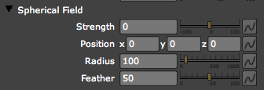

Strength 0
Strength Positive
Strength Negative
Physics tab> Air group> Spherical Field group
The Physics> Air group offers two kinds of displacement models to push along the particles. The model discussed here is Spherical Field, which is a displacement field in the form of a sphere.
In Spherical Field, the sphere can either push particles outward or suck them in toward the center point defined by the sphere position. Spherical Field is not a force field. The effect of the field is instantaneous and does not add to the velocity of the particles—it simply moves the particles to a new position in 3D space.
The other displacement model used by the Physics Air group is Turbulence Field, which is covered on this page.

Spherical Field group.
Strength
Strength is the directional displacement amount around the center point of the field. Positive values create a field that pushes particles outward the center. Negative values pull the particles inward toward the center.
|
||
Strength 0 |
Strength Positive |
Strength Negative |
Position x, y, z
These controls set the position of the displacement field along the X, Y and Z axes.
Radius
The Radius controls defines the size of the Spherical Field. Higher values make a larger displacement area.
Feather
Feather sets the softness of the edges of the Spherical Field. A value of 100 causes a fade in the strength influence across the area with maximum effect at the center and no effect at the edge of the sphere. A value of 0 means that the strength is uniform across the field's area and all particles will be displaced the same amount.